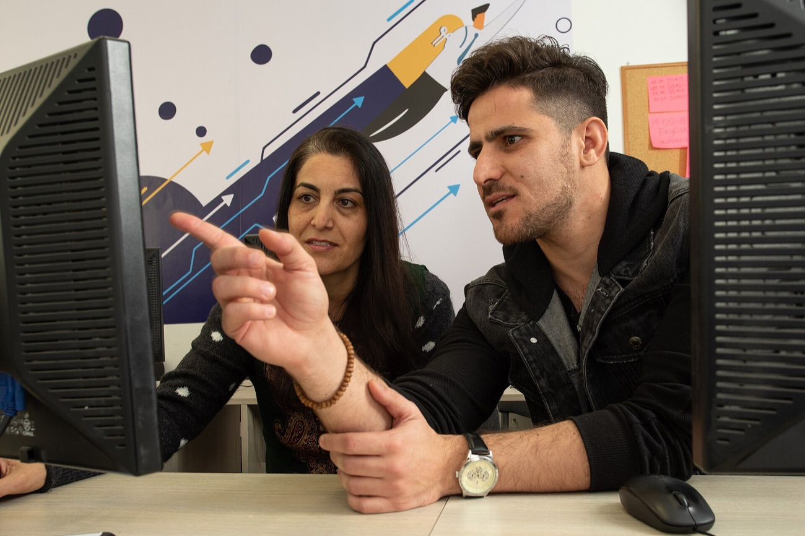

“Some of my co‑workers had suicidal thoughts.”
Homo post Machina
Using Europe’s market power to secure fair work in AI supply chains
In the DLA’s survey, 6 in 10 call the work mentally exhausting.
In 2022, OpenAI paid its Kenyan vendor US$12.50 an hour. Workers took home US$1.32–2.
In 2026, labellers in the DLA’s survey still earn about
nothing has changed.
How we know
We work with the Data Labelers Association in Nairobi
Their pay survey with WageIndicator (not representative)
The Brussels Effect
The AI built on this work is sold here too. 450 million consumers. One rulebook.
Whoever wants to sell in the EU follows EU rules. Many companies then apply them worldwide. The EU can use its market power to set standards that travel.
Kenya can’t do this alone: Scale AI’s platform Remotasks left Kenya in 2024, almost overnight.
Make the work visible
THIS AI?
Make fair work a condition

Pilot first, then scale
Commission and DLA set up the pilot and co-design the standard.
Fair-work clauses in EU institutions’ AI tenders. Voluntary Fair AI label.
Wages, costs and relocation, before any expansion.
Subject to evaluation and legislative approval.
Year 4 decides · three scenarios
Works → extend to EU market
Mixed → simplify, extend pilot
Vendors resist → name them publicly, redesign
A standard that travels.
Kenya can’t solve this alone, but Europe’s market power can.